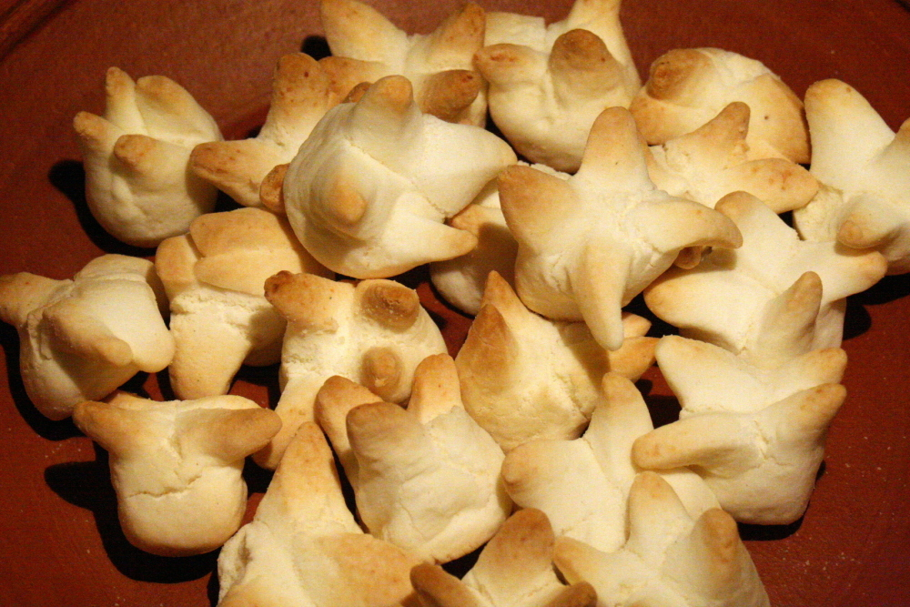
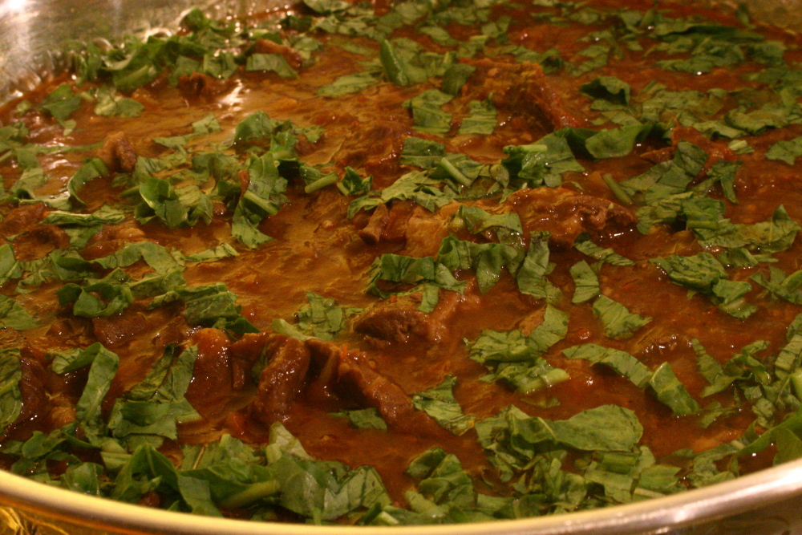
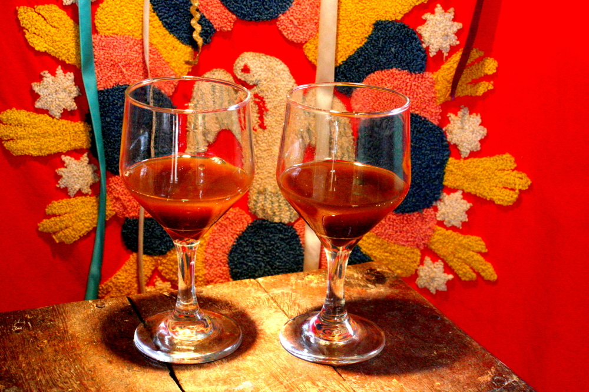
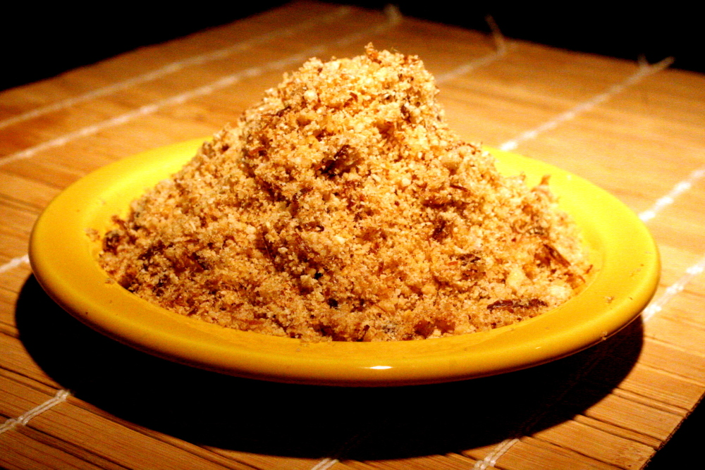

Natividade, Tocantins
Biscoito de polvilho de mandioca tradicional de Natividade,
município localizado na região turística Serras Gerais. A
receita foi criada há mais de cem anos e permanece a mesma.
O processo permanece artesanal com os biscoitos sendo moldados
à mão e assados em forno de barro. Na época da festa do Divino
Espírito Santo, são feitos em forma de pomba e servidos de
graça aos visitantes.

Tocantins
Conhecido também como chambaril, consiste no músculo bovino com o osso,
condimentado e cozido. Em algumas regiões do Brasil também recebe o nome
de osso buco. É um prato muito apreciado em todo o estado, e muitos o
consomem até no café da manhã. Ganhou fama quando foi eleito pelo
Jornal Nacional como o melhor prato regional brasileiro.

Natividade, Tocantins
Caju, jenipapo, pequi e murici são as frutas do cerrado que mais servem de
matéria-prima para os licores artesanais,cujas receitas passam de geração
em geração. Por ocasião da Festa do Divino Espírito Santo, são distribuídos
gratuitamente em embalagens trabalhadas que parecem obras de arte. Também
são encontrados em Monte do Carmo.

Tocantins
Um dos alimentos mais tradicionais do Tocantins é a paçoca de carne seca,
que tem a grande vantagem de manter a qualidade por vários dias, sem
necessidade de refrigeração. Esse prato tem como sinônimo o nome da cidade
de Arraias, que para muitos é onde se faz a melhor paçoca do Estado. Sua
popularidade é antiga: ela era levada pelos cavaleiros que passavam pela
região. A carne seca, cortada em cubos e frita em óleo quente, é socada
no pilão (de preferência sem verniz), com alho picado e farinha de mandioca.
Ela vai se desmanchando com o bater ritmado das mãos de pilão que se alternam
– duas ou três pessoas batendo, conforme o tamanho do pilão, entre 15 a 20 minutos.